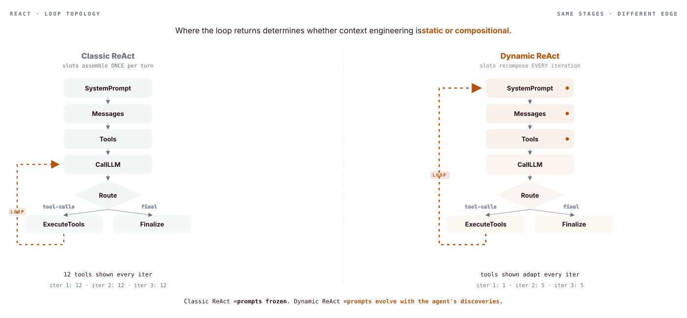
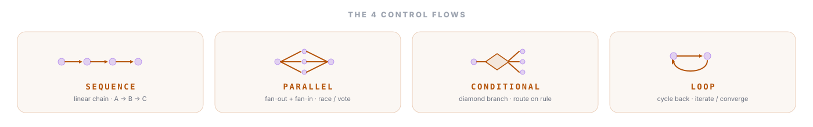
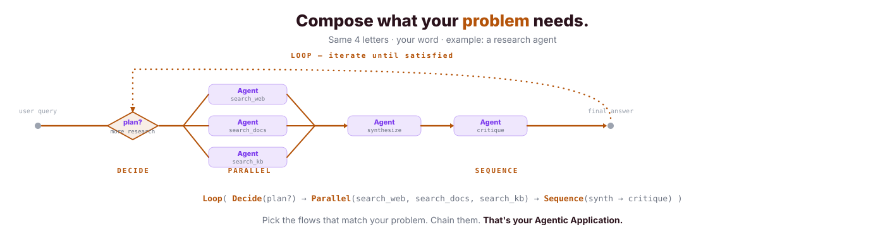
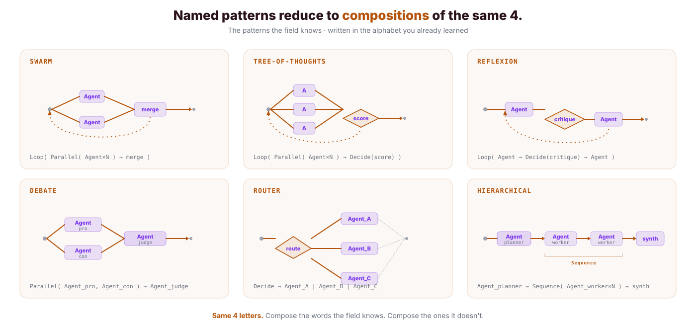

Light theme
#1 — context flavors → mascot → LLM slots

#2 — flavors → injection primitive → LLM slots

#3 — Classic vs Dynamic ReAct loop topology

#4 — Triggers → slots (the core idea)

#5 — Causal memory: 1 run → 3 consumers

#6a — Control flows: the 4 primitives

#6b — Compose your own: research agent example

#6c — Named patterns reduce to compositions of the same 4
